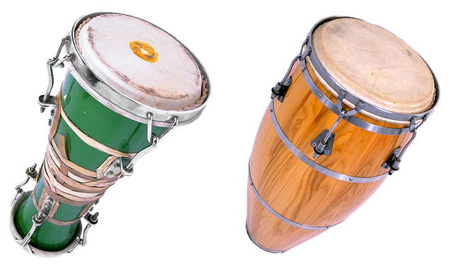
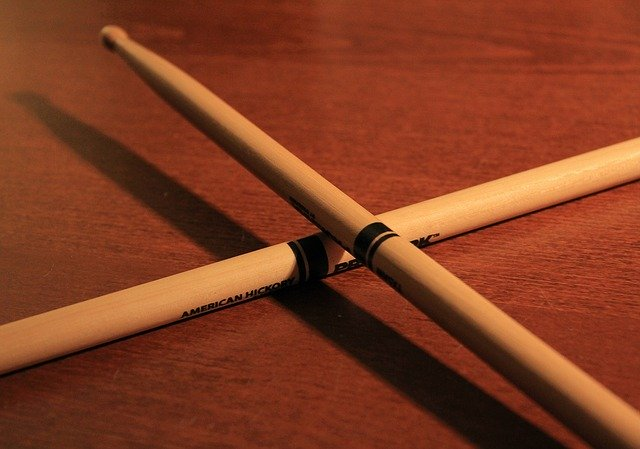

Drums
Drums are made of of various components but the mains parts are made up of hollow shells with thin
membranes stretched across them on either end. They are then struck to create a sound. Drums are used in music to keep the rhythm in a song.

Electronic Drums
Electronic drums consist of pads that are connected to a speaker. When these pads are struck by the
drum sticks they emulate the sound of a real set of drums.

Cajón
Cajóns are boxes that play a different sound depending on which side is struck. The sounds are
similar to that of a drum. They can be struck using your hands or with sticks/brushes/mallets. Cajóns are popular these days among street performers as they are easier to carry than a full drum kit.

Conga/Bongo Drums
Conga drums are long and tall drums while bongo drums are small dums with open bottoms. Both are used
for rhythm in music. The conga drums originated in Cuba whereas the Bongo drums are of Afro-Cuban
origin.
Bass Drum
Base drums are larger in size than other drums which allows them to produce a deep, low sound. They
are primarily used to keep the beat of a song so the other musicians can stay on-time.

Snare Drum
Snare drums are designed to produce a "sharp" sound when struck. This is achieved by the stiff wires
pressed up against the underside of the membrane/skin.

Cymbals
Cymbals are thin, round metal discs that usually come in pairs and they have a slight cone shape.
They are made of various alloys and come in different sizes.

Hi-Hats
Hi-hats can create a long or short ringing sound depending on if they are left open or not. They
consist of two cymbals on top of eachother and are attached to a metal stand. There is a foot pedal
at the base that controls the position of the hi-hats.

Tom-Toms
Tom-Toms or Toms for short are a pair of drums similar to snare drums just without the metal wires on
the inside.

Stool
The stool is simply used for the drummer to sit on but it is still an important part of the drum kit
as it allows the drummer to use both the bass drum and the hi-hats at the same time as they are both
operated with the foot.

Sticks
The drum sticks are an essential tool for drummers. They are used to strike the drums which creates
the sound. There are different types such as mallets, brushes, rods and swizzles.
Extensions
Drum extensions are pieces of equipment that don't come with the base kit but can still be attached.
These can be anything such as cowbells, tambourines, chimes, a woodblock, rototoms/octobans,
specialty cymbals and even electronics.